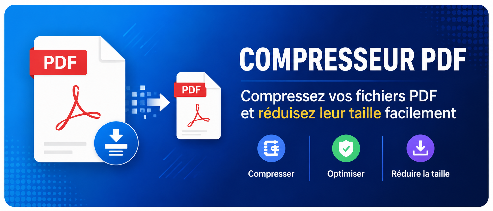
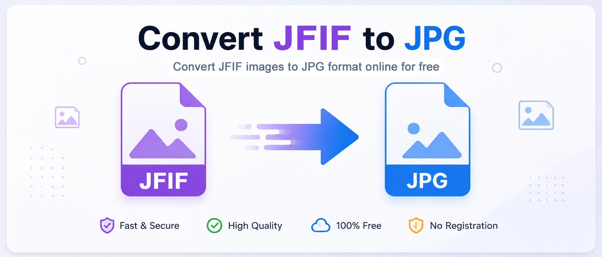

WebP → JPG/PNG
Conversion rapide

JPG ↔ PNG
Conversion bidirectionnelle

Compresser
Réduire la taille des images

Resize
Redimensionner vos images

Recadrage
Couper vos images

Background Remover
Supprimer le fond

Compresseur PDF
Compresser, optimiser, réduiser la taille
AVIF ↔ JPG
Conversion rapide

JFIF ↔ JPG
Conversion simple

Niveaux de gris
Noir & blanc

Netteté
Améliorer la qualité

Flou
Effet flou

Rotation
Pivoter image